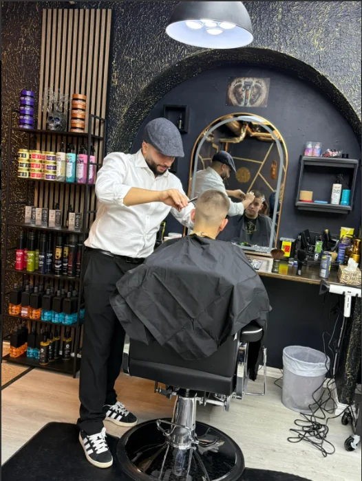
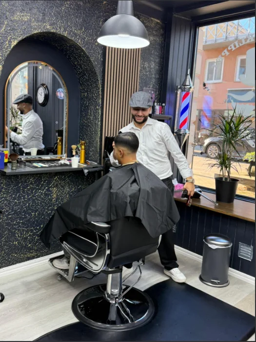

Frisör och barberare i Kristinehamn
Tvilling klippet
Klippning, skäggtrim och styling på Kungsgatan 21A. Boka din tid direkt online.
Boka tidBehandlingar
Prislista
Klippning
Herr
Klippning hår & skägg 400 kr
Komplett grooming där hår och skägg formas efter dina önskemål, med konsultation, precision och lätt styling för en ren finish.
Hårklippning & vaxning 370 kr
Hårklippning anpassad efter stil och önskemål, följt av skonsam vaxning av exempelvis näsa, öron och kinder.
Hårklippning, skägg & vaxning 450 kr
Helhetsuppfräschning med konsultation, klippning, skäggformning och vaxning för ett extra rent och välvårdat resultat.
Pensionärsklippning herr 275 kr
Lugn och noggrann klippning med extra tid för önskemål, en lättskött form och lätt styling för naturlig finish.
Herrklippning 330 kr
Noggrann herrklippning med kort konsultation, oavsett om du vill ha fade, maskinklippning, textur eller klassisk form.
Dam
Damklippning 500 kr
Personlig klippning med konsultation kring form och längd, anpassad efter hår, stil och önskemål med lätt styling efteråt.
Barn
Barnklippning tjej, 0-7 år 270 kr
Trygg och lugn klippstund för de minsta, med tålamod, mjukt bemötande och en frisyr barnet trivs med.
Barnklippning tjej, 8-10 år 330 kr
Modern och noggrann klippning för barn i skolåldern, där barnet får vara delaktigt i ett praktiskt och stilrent resultat.
Barnklippning, 0-7 år 229 kr
Trygg barnklippning med fokus på en rolig stund, lugnt tempo och ett resultat som både barn och förälder blir nöjda med.
Barnklippning, 8-10 år 300 kr
Praktisk och stilren barnklippning för skolålder, skapad efter barnets önskemål i en trygg miljö.
Skägg
Rakning av hår & skägg 329 kr
Rakning av huvud och skäggtrim efter önskemål, med varm handduk som gör rakningen mjukare och mer behaglig.
Endast skägg 199 kr
Skägget trimmas, formas och definieras efter ansiktsdrag och önskemål, med rena konturer för en skarp finish.
Hårborttagning
Hårborttagning med vaxning 100 kr
Skonsam hårborttagning med vaxning eller trådning, exempelvis för bryn, kinder och näsans ytterområden.
Styling
Schamponering & styling herr 100 kr
Håret tvättas noggrant och stylas efter önskemål för en fräsch och välvårdad look.
Schamponering & styling dam 150 kr
Håret tvättas noggrant och stylas efter önskemål för en fräsch och välvårdad look.


Om oss
Två barberare,
En tydlig standard
Tvillingklippet är en modern, varm och professionell frisörsalong i Kristinehamn som skapats med målet att erbjuda en frisörupplevelse där kvalitet, omtanke och kreativitet alltid står i centrum. Varje kund ska få en helhetsupplevelse, från bemötandet när man kommer in genom dörren till känslan när man lämnar salongen med en frisyr som passar stil, personlighet och vardag.
Visionen är att vara en plats där människor känner sig trygga, sedda och omhändertagna, oavsett om besöket gäller en snabb klippning eller en större förändring. På Tvillingklippet kombineras tekniskt hantverk med de senaste trenderna inom hårvård och utvalda produkter som är anpassade för olika hårtyper.
Varje behandling anpassas efter kundens behov. Teamet tar sig tid att lyssna, ge rådgivning och skapa en stil som förstärker kundens naturliga drag och önskemål. Tvillingklippet välkomnar kvinnor, män och barn, med målet att alla ska känna sig bekväma och uppskattade.
Tvillingklippet är en salong där omtanke möter kreativitet, där traditionellt hantverk möter moderna tekniker och där varje kund får chansen att känna sig som sitt bästa jag.